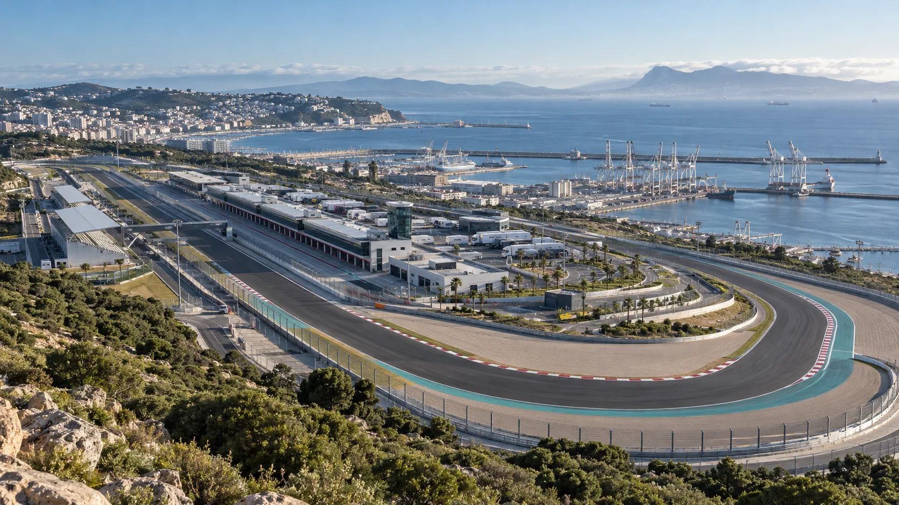
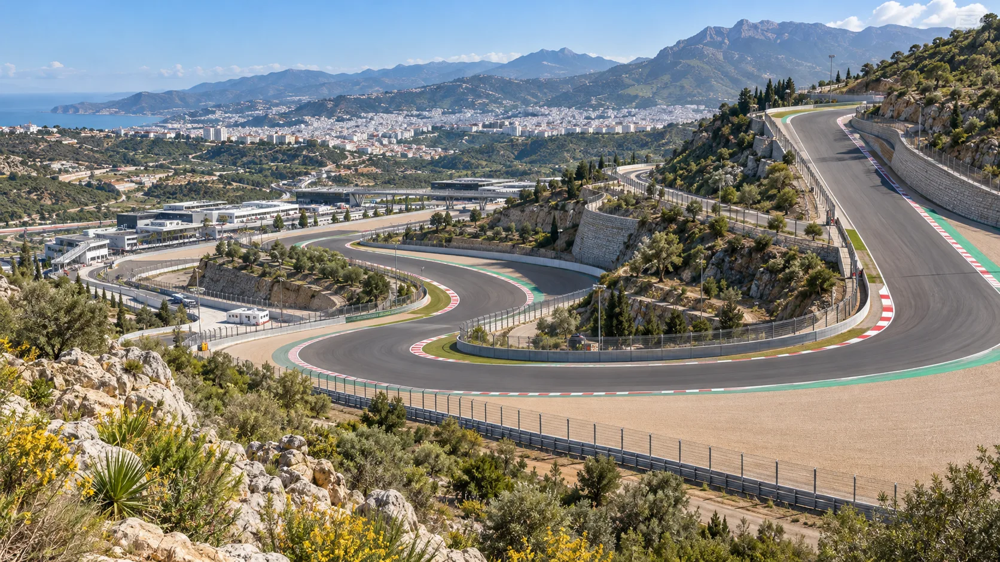
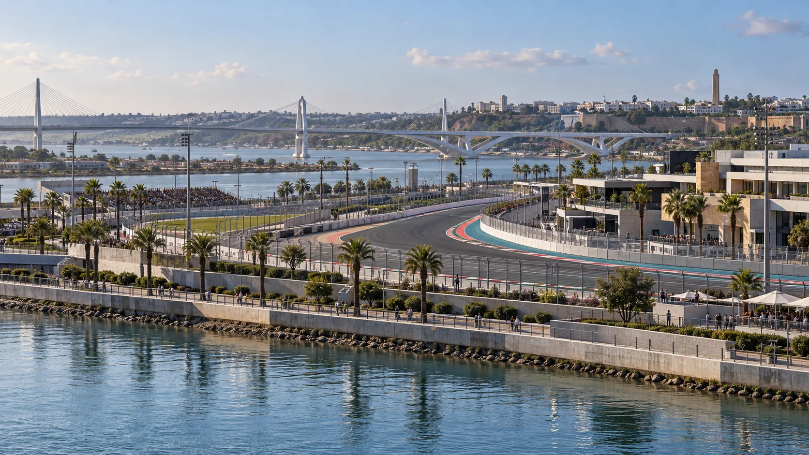
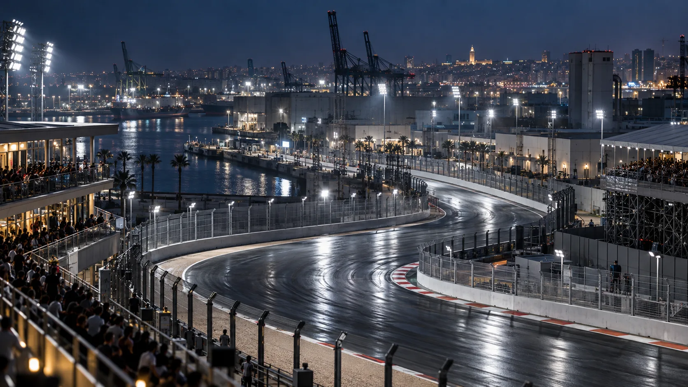
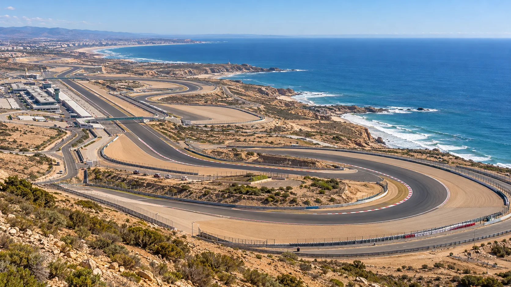
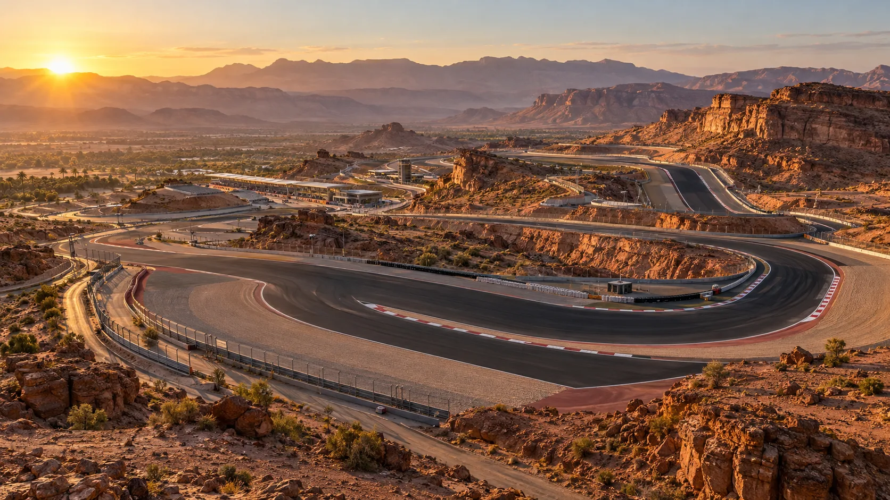
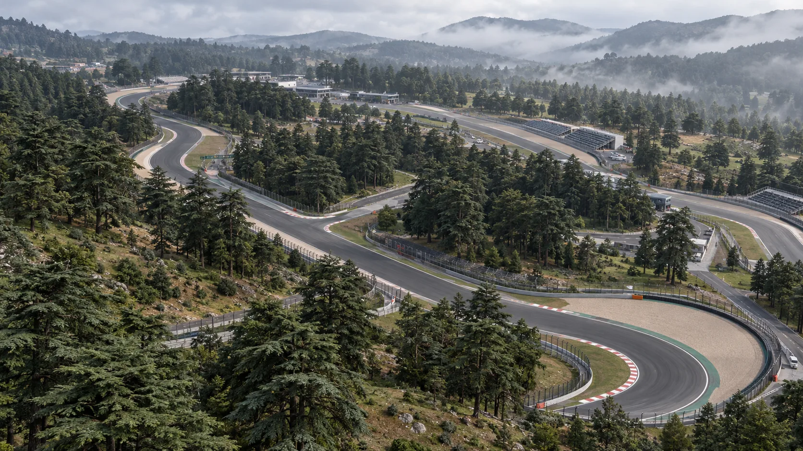
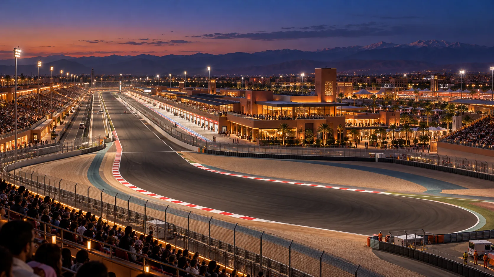

08 CIRCUITS / ONE COUNTRYTHE TRACKS
THE TRACKS
DEFINE US.
Coastal speed. Mountain rhythm. City precision. Desert endurance.

R01 / MAR 20↗
COASTAL SPEED
TANGIER
Strait Circuit5.12 KM · 17 TURNS

R02 / APR 10↗
MOUNTAIN PRECISION
TETOUAN
Ridge Circuit4.36 KM · 19 TURNS

R03 / MAY 01↗
URBAN CONTROL
RABAT
Bouregreg Circuit3.97 KM · 15 TURNS

R04 / MAY 29↗
AFTER-DARK COMBAT
CASABLANCA
Grid Circuit4.85 KM · 18 TURNS

R05 / JUN 26↗
OPEN-THROTTLE FLOW
AGADIR
Atlantic Circuit5.64 KM · 14 TURNS

R06 / JUL 24↗
THERMAL ENDURANCE
OUARZAZATE
Redline Circuit4.79 KM · 20 TURNS

R07 / SEP 04↗
FOREST RHYTHM
IFRANE
Cedar Circuit4.18 KM · 21 TURNS

R08 / OCT 02↗
THE GRAND FINALE
MARRAKECH
Crown Circuit5.29 KM · 16 TURNS